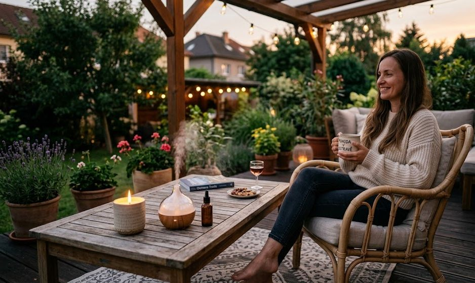
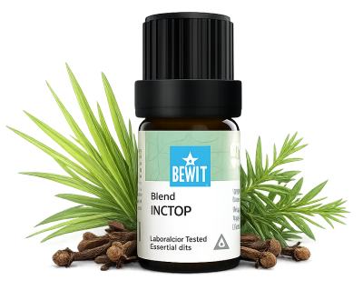

Přírodní repelenty jsou šetrnější k tělu i přírodě. Jejich účinnost závisí na pravidelné aplikaci — opakujte každé 2–3 hodiny a po koupání. Příroda má řešení bez agresivní chemie.

přírodní ochrana bez chemie
Komáři, klíšťata, muchničky nebo podráždění po štípnutí. Ukáži vám, jak se přirozeně chránit před hmyzem a zmírnit nepříjemné reakce — bez chemie, bezpečně pro celou rodinu.

Stop hmyzu

Přírodní repelentní směs určená k ochraně před komáry, klíšťaty, muškami i blechami.
Krásně voní a přirozeně chrání.
💧 Jak použít: zředěný v nosném oleji (např. nimbový) naneste na odhalené části těla — paže, nohy, krk. Opakuj každé 2–3 hodiny nebo po koupání. Do difuzéru nakapejte 3–5 kapek pro ochranu celé místnosti.
Zjistit více →💧 Jak použít: přidejte 3–5 kapek do difuzéru.
Chci chránit prostor💧 Jak použít: zředěný v nosném oleji naneste přímo na místo štípnutí a jemně vtři — opakuj podle potřeby.
Chci zmírnit štípnutí💧 Jak použít: přidejte 3–5 kapek do difuzéru nebo zředěný v nosném oleji kombinuj s Insect Stop na odhalené části těla.
Chci silnou ochranu🌿 Chcete to ještě jednodušší?
Bzzzick! BIO je hotový přírodní sprej — stačí nastříkat na odhalené části těla a jste chráněni. Žádné ředění, žádné odměřování. Ideální na cesty, výlety nebo do kabelky.
Outdoor Body Spray Bzzzick! BIO →Přírodní repelenty jsou šetrnější k tělu i přírodě. Jejich účinnost závisí na pravidelné aplikaci — opakujte každé 2–3 hodiny a po koupání. Příroda má řešení bez agresivní chemie.
Mohlo by vás také zajímat:
🌿 Všechny esence, které na tomto webu doporučuji, jsou od BEWIT. Jako registrovaný zákazník můžete nakupovat se slevou až 50 % na vybrané produkty.
Registrace u BEWIT zdarma →